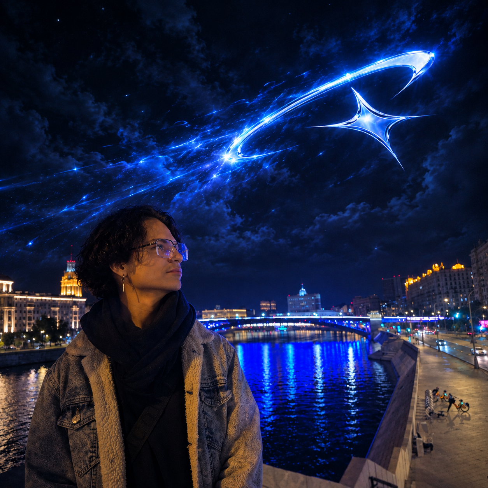
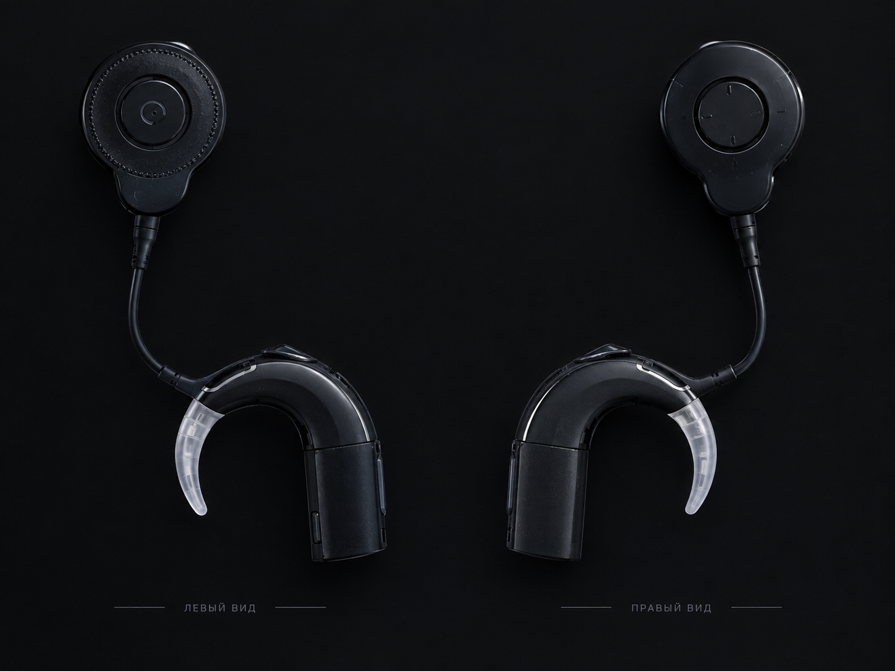

Personal Digital ID
LunarK1ng
Я слабослышащий. Полностью потерял слух с рождения — с 3 лет пользуюсь кохлеарным имплантом Cochlear Nucleus 7.
Если я иногда не отвечаю — возможно, я просто не услышал 😄
Кто вы? ↓Кто вы?
Без процессора
Тишина. Могу почувствовать только вибрации от очень громких звуков рядом.С процессором
Слышу мир вокруг, но не так, как слышащий человек. Главная проблема — шум.Почему я могу не ответить
Я могу вас не игнорировать. Я могу вас просто не услышать.
Особенно если вокруг шумно, кто-то говорит тихо, быстро или одновременно говорят несколько людей.
Так что если я не ответил с первого раза — попробуйте ещё раз 😄
Как со мной разговаривать
- Говорите обычным, понятным голосом — кричать не нужно.
- Лучше смотреть на меня во время разговора.
- Если я не понял — повторите или скажите другими словами.
- В шумном месте может понадобиться говорить чуть громче.
- Если я переспросил — это нормально.
Как это работает
Если очень просто: процессор улавливает звук, обрабатывает его и передаёт на внутреннюю часть импланта. Имплант стимулирует слуховой нерв электрическими сигналами, и мозг получает информацию о звуке.
Это общее объяснение технологии, а не индивидуальная медицинская диагностика.
Мой Cochlear Nucleus 7

- Правое ухо
- Bluetooth — да, через совместимые устройства и приложение
- Приложение используется для управления настройками
- Прямого подключения к ноутбуку в моём случае нет
Батарея
Батарея — это буквально мой звук. Если она разряжается, процессор выключается, и я снова почти ничего не слышу.
Мой личный опыт: большая батарея держит примерно 1–2 дня, маленькая — несколько часов, специальный вариант — до нескольких дней. Это не официальные характеристики устройства.
Вода
Процессор требует осторожности и не предназначен для обычного контакта с водой — дождь, душ, бассейн требуют отдельного внимания.
FAQ
Обо мне — LunarK1ng Digital Profile
Владик / LunarK1ng, 19 лет
Необычный слабослышащий человек.
Что для меня важно: спокойствие, веселье и приключения.
Что меня отличает: я слабослышащий/глухой и владею РЖЯ.
Если информация важная, лучше написать её и при необходимости напомнить ещё раз — воспринимать речь на слух мне иногда трудно 😅
В глухом обществе меня иногда называют актёром / юмористическим клоуном 🙃
Мои направления
- 📸 СМИ / фотографияИнтересуюсь фотографией и медиа примерно с 12–13 лет.
- 🎮 Киберспорт / gamingИграю с 7 лет: Counter-Strike 2, Call of Duty: Warzone, Minecraft.
- 🎵 Музыка (раньше)Участвовал в жестовых песнях, пантомиме и сценических выступлениях.
- 💻 Web / DigitalHTML, CSS, немного JavaScript. Выкладываю проекты на GitHub.
- 🎬 МонтажОбработка фото и видеомонтаж.
- 🧊 3DИногда работаю в Blender — сейчас редко из-за возможностей ноутбука.
Навыки
Умею программировать, использую ИИ как инструмент для ускорения работы.
Компетенция — Веб-дизайн. Участвую каждый год.
Мне интересно пробовать себя в новых направлениях и раскрывать свои навыки. Если у тебя есть интересный проект или идея — возможно, нам есть что придумать вместе 🙂
Часто бываю в Санкт-Петербурге, Москве и Белгороде.
Портфолио
Мои Telegram
Где меня найти
Теперь вы знаете немного больше обо мне.
Если мы общаемся вживую и я что-то не расслышал — просто повторите. Всё нормально 🙂